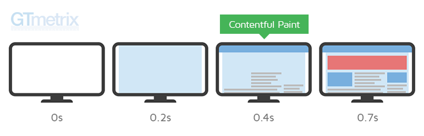

Въведение
С навлизането на модерните уеб технологии и стремежа ни да накараме приложенията ни да правят повече, често срещаме проблеми с производеителността. Днешните сайтове имат повече функционалности от всякога. Всичката тази функционалност обаче идва с цена - в най-добрия случай потребителите ни ще трябва да изяакат малко повече докато могат да използват продукта ни. В най-лошия случай обаче те правят нашия сайт напълно неизползваем или нереагиращ на действията на протребителя.
Защо производителността е важна?
Потребителите все повече използват на мобилни устройства за достъп до уеб съдържание и услуги. Това значи че ние трябва да оптимизираме нашите сайтове дори за не толкова мощните устройства, от които нашите потребители могат да достъпят сайта ни. Потребителите също са по-взискателни от всякога и когато използват нашия сайт го сравняват с не само с кункурентите ни, но и с най-добрите услуги които използват.
Оптимизирането на скоростта на вашия сайт може също така да го направи достъпен за потребители, които имат по-бавни мрежови връзки и не са имали достъп до него преди.
Що се отнася до потребителското изживяване, скоростта има значение. А забавянето, причинено от скоростта на мобилните устройства, не е само разочароващо, но може да има отрицателно въздействие и върху резултатите на бизнеса ни. Например, една секунда забавяне навремето за зареждане може да повлияе на процента на продажбите ни с до 20%.

[X] Why does speed matter? https://web.dev/why-speed-matters/
First Paint vs First Contentful Paint
First Paint измерва времето от навигацията до времето, когато в браузъра рендерира нещо (каквото и да е). Това може да е нещо малко и неинформативно като промяна в цвета на фона.

Тази метрика не е особено полезна понеже това първо рендериране не носи никаква информация на потребителя и сърържанието на страницата още не е заредено.
First Contentful Paint (FCP) измерва времето от навигацията до времето, когато браузърът визуализира първата част от съдържанието от DOM дървото. Това е важен етап за потребителите, защото им дава част от съдържанието на страницата, което те могат да консумират. Също индикира, че сайтът ни наистина се зарежда.
Largest Contentful Paint
Largest COntentful Paint (LCP) ТОДО: обяснение какво измерва и с какво се различава от FP и FCP

Time to Interactive
Time to Interactive (LCP) ТОДО: обяснение какво измерва и с какво се различава :)

Премахнване на неизползван JavaScript код
TODO: изглежда очевидно, но е голям проблем. (може да се покаже статистика) Как да видим какво не се използва?
Минифицирайте и компресирайте ресурсите по мрежата
TODO: За големи приложения пращаме килобайти (мегабайти) JS и CSS по мрежата. За да намалим размера можем да минифицираме (намаляваме възможно най-много сорс кода) и компресираме файловете преди да ги изпратим на клиента.
Намалете количеството Javascript с Code Splitting
Не всичкият javascript за сайта ни е нужен при първоначалното зареждане на страницата. Можем да разделим кода на модули, които да се зареждат динамично когато са нужни. TODO: покажи пример с dynamic imports
Зареждайте некритичен css по-късно
CSS е render blocking и ако можем да го приложим по-късно е по-добре за performance (TODO: обясни какво значи render blocking) Дай пример как се прилага
Вградете критичния css в документа
CSS is render blocking (again). Когато импортваме css браузъра трябва да го изчака да се зареди по мрежата преди да продължи. За да забързаме този процес е добре най-важния css да бъде вграден в html документа. Ако се комбинира с горната точка получаваме бонус точки.